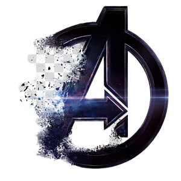

Vanos falar sobre os filmes!
Em ordem de lançamento
1. Homem de Ferro (2008) [Filme]
2. O Incrível Hulk (2008) [Filme]
3. Homem de Ferro 2 (2010) [Filme]
4. Thor (2011) [Filme]
5. Capitão América: O Primeiro Vingador (2011) [Filme]
6. Os Vingadores (2012) [Filme]
1. Homem de Ferro 3 (2013) [Filme]
2. Agentes da S.H.I.E.L.D. - Primeira temporada (2013) [Série]
3. Thor: O Mundo Sombrio (2013) [Filme]
4. Capitão América: O Soldado Invernal (2014) [Filme]
5. Guardiões da Galáxia (2014) [Filme]
6. Agentes da S.H.I.E.L.D. - Segunda temporada (2014) [Série]
7. Agente Carter - Primeira temporada (2015) [Série]
8. Vingadores: Era de Ultron (2015) [Filme]
9. Demolidor - Primeira temporada (2015) [Série]
10. Homem-Formiga (2015) [Filme]
11. Agentes da S.H.I.E.L.D. - Terceira temporada (2015) [Série]
12. Jessica Jones - Primeira temporada (2015) [Série]
1. Agente Carter - Segunda temporada (2016) [Série]
2. Demolidor - Segunda temporada (2016) [Série]
3. Capitão América: Guerra Civil (2016) [Filme]
4. Agentes da S.H.I.E.L.D. - Quarta temporada (2016) [Série]
5. Luke Cage - Primeira temporada (2016) [Série]
6. Doutor Estranho (2016) [Filme]
7. Punho de Ferro - Primeira temporada (2017) [Série]
8. Guardiões da Galáxia Vol. 2 (2017) [Filme]
9. Homem-Aranha: De Volta ao Lar (2017) [Filme]
10. Os Defensores (2017) [Série]
11. Inumanos (2017) [Série]
12. Justiceiro - Primeira temporada (2017) [Série]
13. Thor: Ragnarok (2017) [Filme]
14. Jessica Jones - Segunda temporada (2017) [Série]
15. Pantera Negra (2018) [Filme]
16. Vingadores: Guerra Infinita (2018) [Filme]
17. Homem-Formiga e a Vespa (2018) [Filme]
18. Manto & Adaga - Primeira temporada (2018) [Série]
19. Capitã Marvel (2019) [Filme]
20. Vingadores: Ultimato (2019) [Filme]
1943-1945 - Capitão América: O Primeiro Vingador
1995 - Capitã Marvel
2010 - Homem de Ferro
2011 - O Incrível Hulk
2011 - Homem de Ferro 2
2011 - Thor
2012 - Os Vingadores
2012 - Homem de Ferro 3
2013 - Thor: O Mundo Sombrio
2014 - Capitão América 2 - O Soldado Invernal
2014 - Guardiões da Galáxia
2014 - Guardiões da Galáxia Vol. 2
2015 - Vingadores: Era de Ultron
2015 - Homem-Formiga
2016 - Capitão América: Guerra Civil
2016 - Viúva Negra (excluindo cena pós-créditos)
2016 - Homem-Aranha: De Volta ao Lar
2016/2017 - Doutor Estranho
2017 - Pantera Negra
2017 - Thor: Ragnarok
2017 - Homem-Formiga e a Vespa
2017 - Vingadores: Guerra Infinita
2018-2023 - Vingadores: Ultimato
2023 - WandaVision
2023 - Falcão e o Soldado Invernal
2024 - Homem-Aranha: Longe de Casa
2024 - Homem-Aranha: Sem Volta para Casa
2024 - Eternos
2024 - Shang-Chi e a Lenda dos Dez Anéis
2024 - Gavião Arqueiro
OBS: Loki acontece em 2012 com uma versão alternativa do Deus da Trapaça (Tom Hiddleston), mas se passa em uma linha do tempo alternativa da Marvel. Enquanto isso, What If...? explora o multiverso do Universo Cinematográfico Marvel, revisitando as histórias durante a Saga do Infinito caso elas tivessem acontecido de uma maneira diferente. É importante lembrar que a ordem de lançamentos dos filmes e séries não necessariamente correspondem a mesma linha temporal deles. Partindo da transformação de Steve Rogers em Capitão América em O Primeiro Vingador nos anos 1940, traçamos a ordem cronológica de todo o Universo da Marvel nas telonas, de acordo com as informações fornecidas pelo próprio estúdio, e para quem quiser assistir cada um de acordo com a linha do tempo. Um exemplo é o lançamento do filme Viúva Negra, que nos faz voltar um pouquinho no tempo, lá para 2016 depois de Capitão América: Guerra Civil, quando finalmente descobrimos o que aconteceu em Budapeste.
Agora que você já sabe a ordem dos filmes e séries da Marvel, chegou a hora de maratonar alguns dos principais sucessos de super-heróis no Disney+.
THANOS
CAPITÃO AMÉRICA / STEVE ROGERS
HOMEM DE FERRO / TONY STARK
HULK / BRUCE BANNER
THOR
VIÚVA NEGRA / NATASHA ROMANOFF
RONIN / GAVIÃO ARQUEIRO / CLINT BARTON
MÁQUINA DE COMBATE / JAMES RHODES
HOMEM-FORMIGA / SCOTT LANG
CAPITÃ MARVEL / CAROL DANVERS
NEBULOSA
OKOYE
ROCKET
WONG
HAPPY HOGAN
PEPPER POTTS
VALQUÍRIA
História da equipe
Primeiras aventuras
Loki, o deus Asgardiano da trapaça, traçou uma vingança contra seu meio-irmão Thor, atraindo o Hulk para concretizar seu plano. Loki enviou um pedido de socorro para Thor, que também foi recebido pelo Homem-Formiga, a Vespa e o Homem de Ferro. Após derrotarem Loki, o Homem-Formiga conclui que os cinco trabalharam bem juntos e sugeriu que eles formassem uma força conjunta. A Vespa nomeou o grupo e assim nasciam Os Vingadores.
A escalação da equipe mudou quase que instantaneamente: o Homem-Formiga se tornou o Gigante, e o Hulk, ao perceber o quanto os outros temiam sua personalidade instável, deixou-a ao final da segunda edição. A tentativa de conter o Hulk levou os Vingadores a combater Namor, O Príncipe Submarino, e isso por sua vez, levou a equipe ao primeiro marco em sua história - o retorno do Capitão América, em The Avengers #4 (Março de 1964). O patriótico herói dos anos 1940 foi encontrado congelado em animação suspensa desde o fim da Segunda Guerra Mundial. E precisava de um lugar onde pudesse se ajustar já que era um homem afastado décadas de seu tempo.
O Capitão América se uniu à equipe iniciando uma quase indelével associação. Mesmo quando a liderança foi tomada por outros, Capitão América sempre foi o comandante tático dos Vingadores em campo e poucos hesitavam em obedecer suas ordens.
Os membros originais a participar dos Vingadores são conhecidos como "membros fundadores", responsáveis pelo bom nome da equipe. Capitão América ganhou o título de "membro fundador" no lugar do Hulk (como revelado em Avengers Vol. 3 #1, de fevereiro de 1998). Juntos, os Vingadores combateram vilões como o inimigo do Capitão América do tempo da guerra Barão Zemo; a vilania do viajante do tempo Kang, o Conquistador; Conde Nefária e os Homens Lava, e os Mestres do Terror, um grupo de vilões capaz de combater os Vingadores.
O próximo marco foi em Avengers #16, no qual todos os membros deixaram a equipe com exceção do Capitão América. Eles foram substituídos por Gavião Arqueiro, Feiticeira Escarlate e Mercúrio, todos ex-vilões que queriam começar uma nova vida.